HISTOIRES ET FABLES
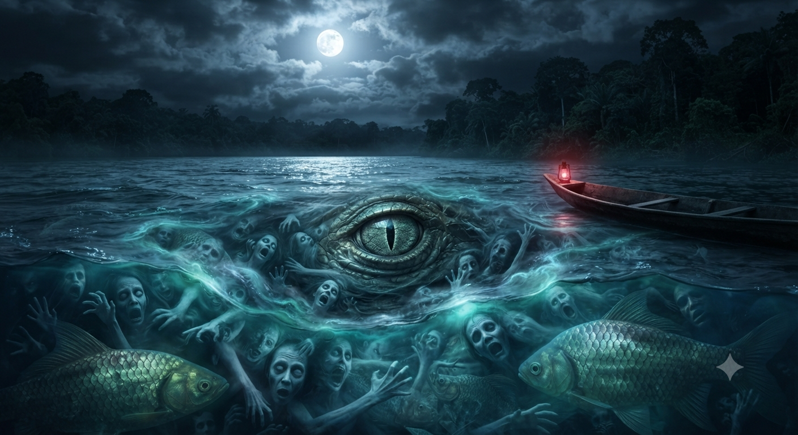
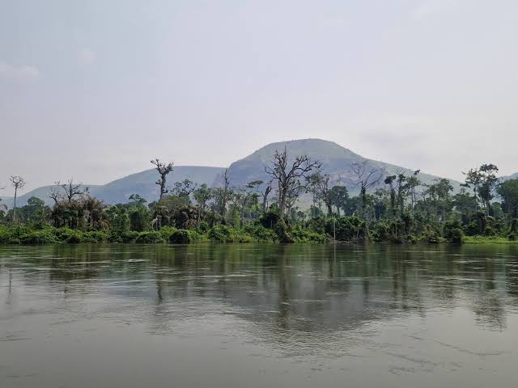
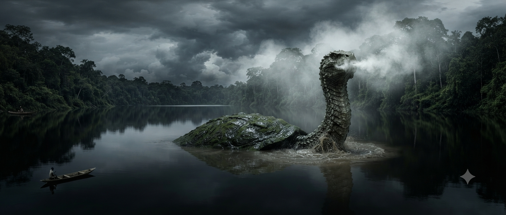
Mokélé-Mbembé
Impfondo sentait la terre humide et le bois brûlé. Lorsque le soleil se couchait sur l’Oubangui, le fleuve ne reflétait plus le ciel, mais une obscurité si profonde qu'elle semblait avaler la lumière. Pour Étienne, le vieux guide bantou, cette heure était sacrée. Il déposa une offrande de noix de kola au bord de l'eau, murmurant une prière aux esprits des eaux – ces entités qui, selon la légende, nagent sous les pirogues et tirent les imprudents vers les profondeurs. « Le lac Télé est son trône, dit-il en désignant le sud d'un geste vague. Mais c'est ici, à Impfondo, que son souffle remonte le courant. » Son regard se perdit dans les méandres boueux. Le Mokélé-Mbembé n'était pas un simple dinosaure rescapé du temps ; c'était un gardien, un souffle primordial qui dormait sous les couches de sédiments. Les expéditions occidentales arrivaient avec leurs filets et leurs sonars, mais Étienne savait que la bête ne se laissait pas traquer. Elle se révélait. Un jour, elle le ferait. La veille du départ pour le sanctuaire, une immense vague déferla sans vent, faisant tanguer les embarcations amarrées. Une ombre gigantesque, lisse comme un galet, glissa sous la coque d'un bateau vide, avant de disparaître. Le fleuve, un instant, se figea. Puis le silence retomba, lourd comme une promesse ancienne. Impfondo n'était que la porte ; le véritable mystère, lui, attendait, là-bas, au cœur des eaux noires, sous les cris des oiseaux et la vigilance des dieux.
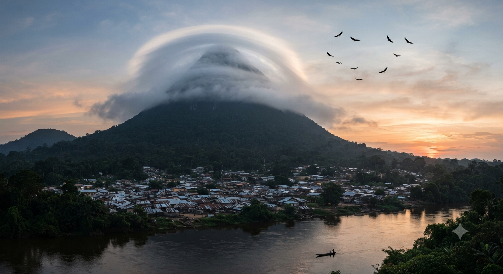
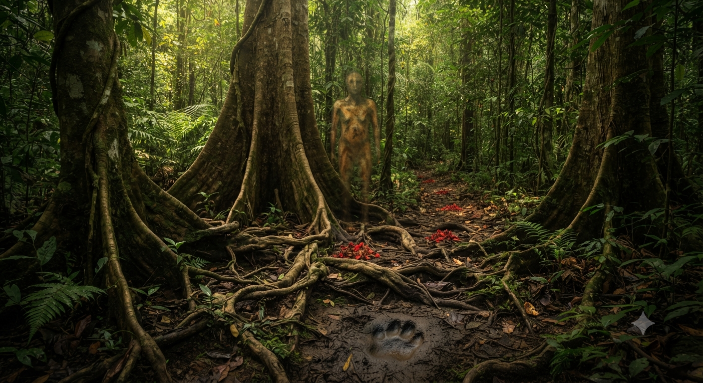
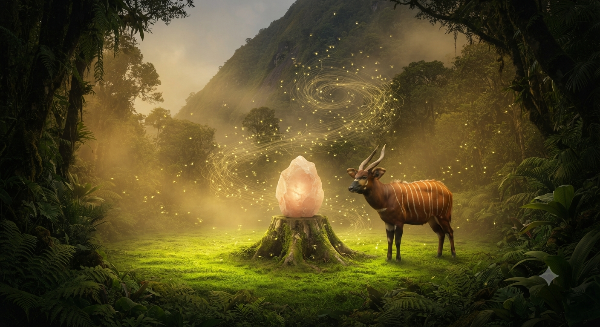
Le Souffle du Nabemba
À Ouesso, le ciel n’est jamais tout à fait dégagé. Une brume persistante coiffe le mont Nabemba, comme si la montagne elle-même respirait et que son haleine humide se mêlait à la canopée. Pour Kenga, jeune Pygmée Baka, cette brume n’était pas un caprice météorologique – c'était la barbe des ancêtres, le voile que les grands esprits protecteurs tissaient pour cacher leurs visages aux yeux trop curieux. Lorsque le chercheur français arriva, bardé de GPS et de boussole, il rit de l'avertissement de Kenga. « Un sommet de 1 000 mètres, ce n'est rien, dit-il. Je le gravirai en une journée. » La veille de l'ascension, Kenga déposa un collier de perles rouges au pied d'un fromager géant. « Les esprits n'aiment pas l'orgueil, murmura-t-il. Mais ils aiment les fous. » Le lendemain, le chercheur s'engagea dans la forêt. Au bout de deux heures, il tournait en rond. Les arbres – des limbali centenaires aux racines noueuses – se refermaient derrière lui. Ses instruments s'affolèrent ; l'aiguille de sa boussole dansa comme un poisson paniqué, attirée par une force invisible. La forêt n'était pas un décor, c'était un corps vivant, un filet tendu par les esprits. Kenga le retrouva au crépuscule, assis au pied du même fromager, les mains vides. Le chercheur ne parlait plus d'ascension. Il regardait la montagne, silencieux. Alors Kenga l'emmena par un sentier que seuls les Baka connaissaient – un passage étroit, enveloppé de lianes, où le sol vibrait sous leurs pieds comme un tambour. Ils n'atteignirent pas le sommet. Ils s'arrêtèrent à mi-pente, dans une clairière baignée d'une lumière dorée qui ne venait ni du soleil ni de la lune. Là, une grande antilope aux cornes spiralées les observa un instant, avant de disparaître dans un buisson, sans un bruit. Le chercheur comprit alors que le Nabemba n'était pas un rocher à vaincre, mais un sanctuaire. Les esprits n'habitaient pas la cime – ils étaient les racines, la sève, le souffle qui faisait frémir chaque feuille. Et pour les voir, il suffisait de cesser de vouloir grimper, et d'écouter.
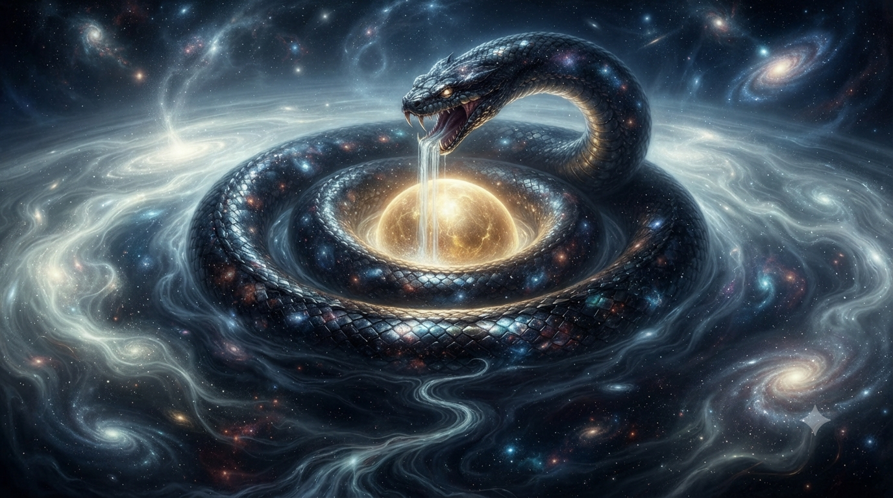
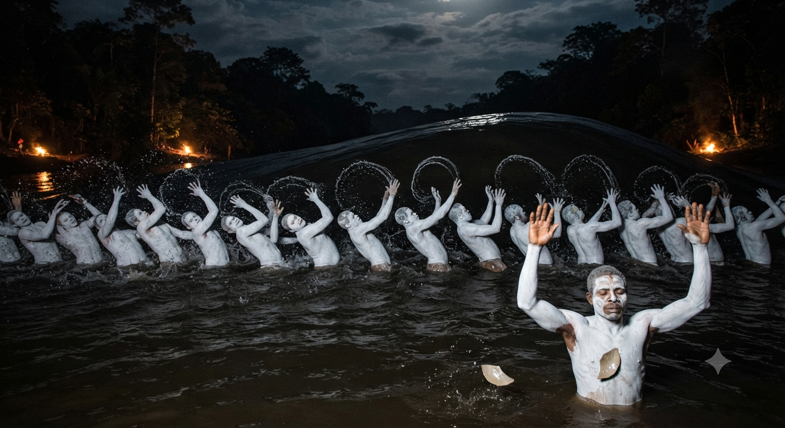
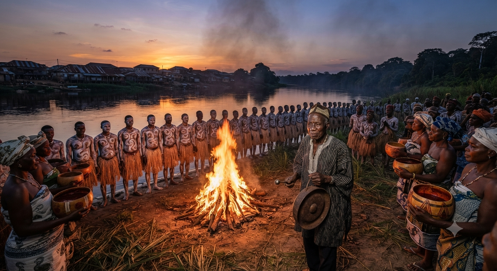
Le Corps du Serpent
À Owando, le fleuve Kouyou n'a pas de source et pas d'embouchure – du moins, c'est ce que prétendait Nzambi, le plus ancien des initiés. Il racontait que le Kouyou était une entité vivante, et que ses eaux brunâtres, lourdes de limon, étaient le sang d'un dieu. Le jeune Mambé, qui assistait pour la première fois aux préparatifs de la danse Ottoté, se tenait sur la berge, les pieds dans la vase, sceptique. Pour lui, le fleuve n'était qu'une rivière, large et paresseuse, où les femmes lavaient le linge et les enfants attrapaient des poissons-chats. Nzambi le prit par l'épaule et lui montra le reflet du soleil couchant sur l'eau. « Regarde les rides, dit-il. Elles forment des anneaux, n'est-ce pas ? Le serpent Ottoté ne se cache pas dans le fleuve. Il est le fleuve. » Alors Nzambi raconta la cosmogonie. Avant le temps, disait-il, il n'y avait qu'un vide liquide, une mer sans rives. Le grand serpent Ottoté, primordial et infini, s'enroula autour de ce chaos, serrant ses écailles jusqu'à ce que l'eau gémisse. Puis, d'un coup de queue, il se déroula. Ses anneaux en se déployant tracèrent les vallées, ses écailles écrasées formèrent le granit des collines, et la salive qui coula de sa gueule devint le Kouyou, le premier ruisseau de la création. « Il se déroule encore, chaque fois que nous dansons, » chuchota Nzambi. « Si nous arrêtons, le monde s'enroule à nouveau, et nous retournons au vide. » Le soir venu, les tambours ngoma résonnèrent. Les danseurs, le torse peint d'argile blanche, entrèrent dans l'eau du Kouyou. Leurs corps ondulaient, leur colonne vertébrale serpentait, leurs bras traçaient des huit invisibles. Mambé se joignit au cercle, hésitant. Mais quand ses pieds s'enfoncèrent dans le courant, il sentit quelque chose de plus ancien que sa propre chair – une vibration remontait du fond vaseux, comme si le fleuve lui-même tressaillait. Ses hanches se mirent à bouger seules, épousant la cadence du serpent cosmique. Les esprits des ancêtres, disait-on, dansaient dans les ondulations des danseurs. Alors le Kouyou se mit à frémir. Une vague massive, douce et huileuse, déferla sans qu'aucun vent ne souffle. Les eaux s'élevèrent et retombèrent comme une respiration. Mambé comprit soudain : il ne célébrait pas le serpent ; il était le serpent, une écaille éphémère de son corps immense. La danse Ottoté n'était pas un hommage, c'était un rappel. Elle maintenait le monde déroulé, empêchant le chaos liquide de se refermer. Quand les tambours se turent, le fleuve retrouva sa placidité. Mambé, ruisselant, regarda Nzambi. Le vieil homme sourit et, sans un mot, lui tendit une poignée d'argile blanche. Le jeune homme l'étala sur son torse. La cosmogonie venait de s'écrire en lui.
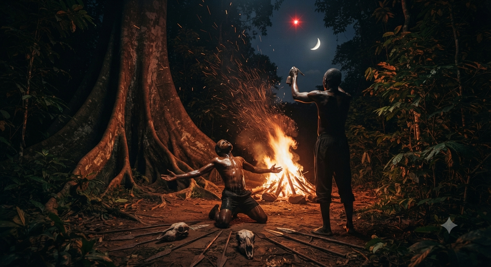
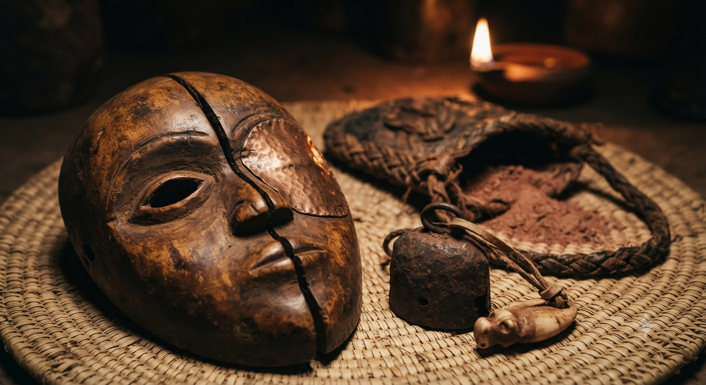
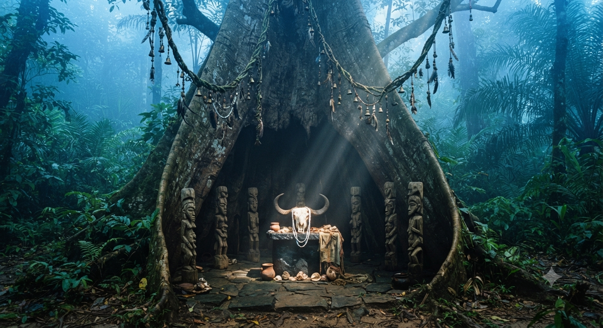
Le Poids du Masque
Le berceau du Kani n'était pas un lieu que l'on trouvait par hasard. Il fallait être appelé. Letembé, jeune guerrier du clan des Ngbaka, avait rêvé trois nuits de suite d'un masque aux yeux de pierre qui le regardait depuis le fond d'une grotte. Au quatrième matin, il quitta son village et s'enfonça dans la forêt, suivant une piste que seuls les esprits pouvaient tracer. Au bout de deux jours de marche, il atteignit une clairière où un fromager centenaire, creux comme un ventre, abritait un autel de pierre noire. C'était là. Mokulu, le dernier gardien de la confrérie, l'attendait, assis sur une natte de raphia. Il avait cent ans, peut-être plus. Ses doigts tremblaient en manipulant une clochette de fer rouillée. « Le Kani ne se choisit pas, dit-il sans lever les yeux. Il se révèle. Les masques sacrés ne donnent pas le pouvoir ; ils le soumettent. Ils prennent ton orgueil, ta peur, ton nom, et ils te rendent ce que la contrée a oublié. » Letembé s'agenouilla. Les reliques – des crânes de buffles, des lances brisées, des sachets de terre rouge – étaient disposées en cercle autour du tronc. Chaque objet contenait une mémoire, un pacte scellé entre les vivants et les ancêtres. La cérémonie eut lieu à la tombée de la nuit. Mokulu déposa le masque principal sur le visage de Letembé. Le bois était si lourd que ses cervicales craquèrent. L'air se chargea d'une odeur d'huile de palme brûlée. Dans l'instant où le masque toucha sa peau, Letembé ne vit plus la forêt. Il vit des générations de sages – des hommes et des femmes aux scarifications identiques – assis en cercle autour d'un feu éternel. Il entendit leurs voix superposées, récitant les lois de la terre, les cycles des semailles et des guerres, la sagesse des partages et des alliances. Le Kani n'était pas une confrérie politique au sens moderne ; c'était une colonne vertébrale immatérielle. Sans elle, le pouvoir des chefs n'était que du bruit. Avec elle, chaque décision devenait un écho de la mémoire collective. Lorsque Mokulu retira le masque, Letembé pleurait, sans honte. Il avait perdu son enfance, mais il avait gagné la mémoire de son peuple. Le vieux gardien le regarda, un sourire édenté aux lèvres. « Tu es le dernier, dit-il. La confrérie s'éteint avec moi. Mais tant que tu porteras ce masque dans ta tête, elle vivra. Va. Et souviens-toi : le berceau n'est pas ici. Il est en toi. » Letembé repartit. Son corps était léger, mais son esprit pesait le poids de mille ans. À son retour au village, sans dire un mot, il prit une lance et se tint au centre du conseil. Personne n'osa le défier. Les anciens comprirent que le Kani venait de renaître.
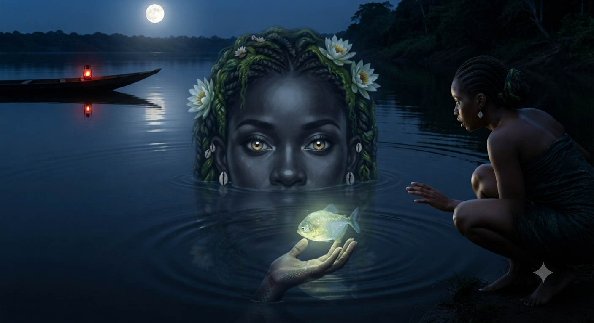
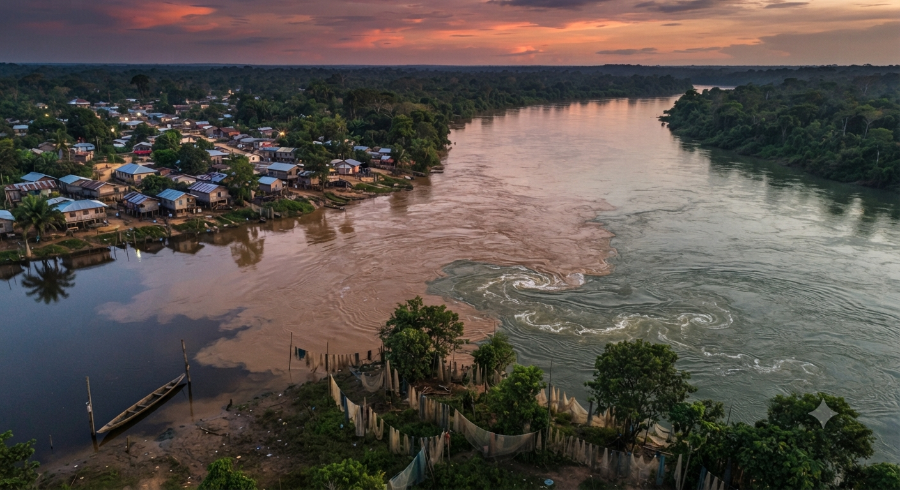
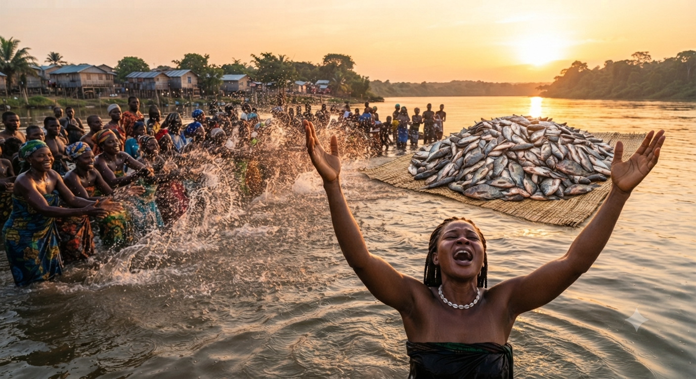
Le Souffle de Mami Wata
Au confluent de la Sangha et de l'Oubangui, là où les eaux brunes et les eaux grises se mêlent sans jamais tout à fait se fondre, se dresse le chef-lieu de Mossaka. C'est un village de pêcheurs aux cases de terre battue, où l'odeur du poisson fumé imprègne les vêtements et les rêves. Pour les anciens, le confluent n'est pas une simple rencontre géographique – c'est le cœur battant de Mami Wata, la déesse aquatique aux cheveux de nénuphar, dont les yeux brillent comme des perles de rivière. Nzinga, jeune veuve, vivait de sa pirogue. Chaque matin, elle tendait ses filets dans le bras mort de la Sangha, mais depuis trois semaines, les eaux étaient vides. Ses voisins murmuraient qu'elle avait offensé l'esprit en refusant un sacrifice. « Tu dois déposer une calebasse de vin de palme au pied du grand fromager, » lui conseilla sa grand-mère. Nzinga, têtue, préféra compter sur ses bras. Mais la faim la tenaillait, et ses enfants pleuraient. Une nuit de pleine lune, elle sortit seule sur le confluent. La surface de l'eau était d'un noir d'encre, lisse comme un miroir. Soudain, une musique monta du fond – un clapotis rythmé, presque une voix. Nzinga se pencha. Dans l'eau, elle vit le reflet d'une femme aux seins couverts d'écailles d'argent, aux cheveux tressés de serpentins de corail. La femme la regardait, souriante, et tenait dans ses mains un poisson immense – un capitaine d'or, dont les écailles luisaient comme des pièces de monnaie. Mami Wata ne parlait pas, mais Nzinga comprit : l'esprit ne demandait pas un sacrifice, mais un engagement. « Viens chaque nuit, » sembla dire le regard. « Respecte l'eau, et elle te donnera. » Nzinga rentra, tremblante. Le lendemain, elle pêcha un filet si lourd qu'elle dut appeler deux hommes pour le hisser. Les poissons – des tilapias, des silures, des capitaines – étaient si nombreux qu'ils débordaient de la barque. L'abondance revint, non pas parce qu'elle avait offert du vin, mais parce qu'elle avait vu Mami Wata et qu'elle avait accepté de danser avec elle, chaque soir, sur la berge, en frappant l'eau du plat de la main. Les voisins, étonnés, vinrent la voir. Elle leur raconta le reflet. Alors, un rituel naquit : les pêcheurs de Mossaka, désormais, avant de lancer leurs filets, tracent un cercle dans l'eau avec leur pagne, murmurant le nom de Mami Wata. Le confluent devint un lieu sacré, non parce qu'il était dangereux, mais parce qu'il était vivant. Et Nzinga, qui avait refusé le sacrifice, devint la gardienne du génie du fleuve, celle qui savait que l'abondance ne se prend pas – elle s'écoute.
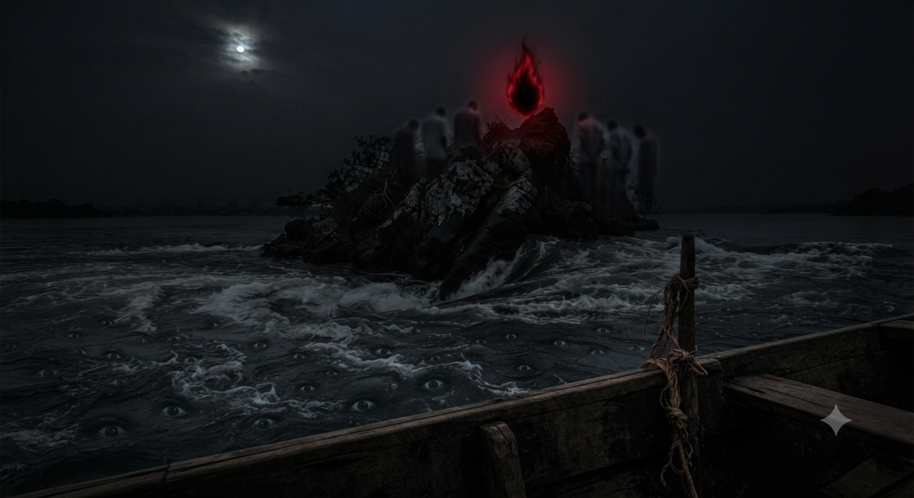
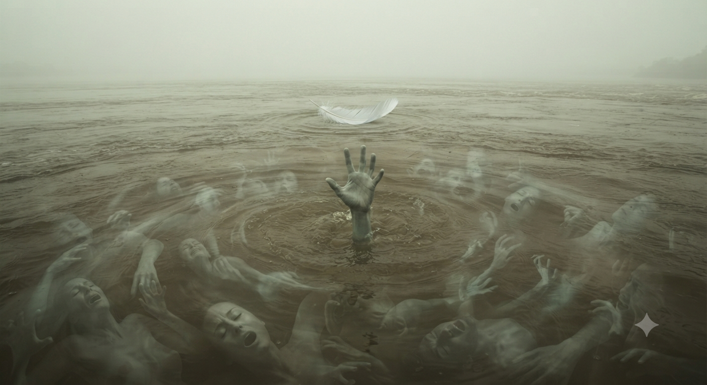
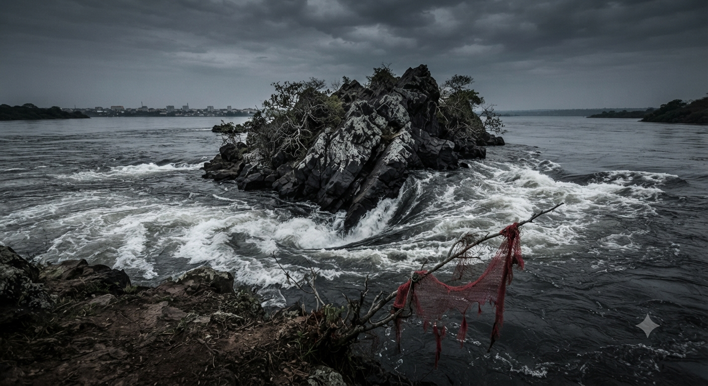
Le Pacte des Eaux Noires
Le fleuve Congo, à cet endroit, n’est pas une rivière. C’est une gorge liquide, une bête qui roule ses muscles de granite et d’écume. Au sud de la ville, là où les berges se resserrent et que le courant se cabre, se dresse l’Île du Diable – un bloc de roche noire, hérissé de pointes, que les pêcheurs désignent du doigt sans jamais prononcer son nom. On raconte que les rapides qui l’entourent ne sont pas des vagues, mais des mains. Des mains d’ombres qui tirent les pirogues vers le fond, et que les cris des noyés, mêlés au grondement de l’eau, forment un chant de colère que seul le diable peut comprendre. Eloko, vieux pêcheur au dos voûté, avait perdu son fils unique trois ans plus tôt. Le jeune homme, imprudent, avait voulu prouver son courage en frôlant l’île. Sa barque avait chaviré en moins d’une minute, et son corps ne fut jamais retrouvé. Eloko ne pleura pas. Il se mura dans un silence de pierre, et chaque soir, il s’asseyait sur la rive, face à l’île, et regardait les rapides sans ciller. Les villageois le croyaient fou. Mais Eloko attendait. Une nuit de tempête, alors que la lune se cachait et que le fleuve hurlait, il vit une lueur rouge vaciller sur la roche. C’était une flamme, ou peut-être un œil. Il ne dormit pas. Le lendemain, il prit sa pirogue, malgré les supplications de sa femme. Il ne ramait pas vers l’île – il se laissait dériver, les bras croisés, le regard fixé sur le tourbillon le plus violent. Quand l’embarcation fut happée par le courant, il ne lutta pas. Il ferma les yeux et murmura le nom de son fils. Ce qu’il vit ensuite, il ne le raconta jamais à personne. Mais les pêcheurs, les jours suivants, remarquèrent que l’île semblait plus sombre, plus massive, comme si elle avait avalé un peu plus de lumière. Eloko revint au village, la pirogue intacte, le corps indemne, mais les yeux vides. Il marcha jusqu’à sa case, s’allongea sur sa natte, et ne se releva pas. On dit que les forces maléfiques de l’île n’avaient pas pris son corps, mais son âme – et que celle-ci errait désormais dans les rapides, aux côtés de son fils, gardienne du seuil infernal. Depuis, plus aucun pêcheur n’ose même regarder l’île. Les femmes évitent de laver le linge sur la berge sud. Et quand le fleuve gronde trop fort, les enfants se cachent sous les nattes. L’Île du Diable n’est pas un lieu : c’est une promesse de fin, une bouche qui attend, et dont les dents sont les vagues.
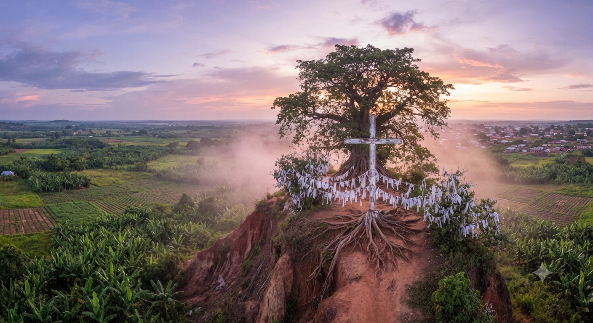
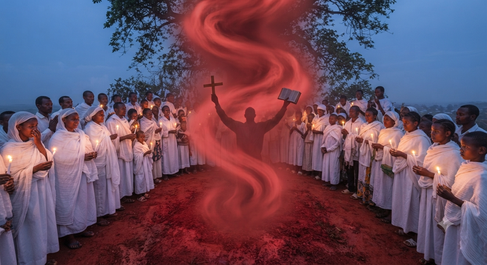
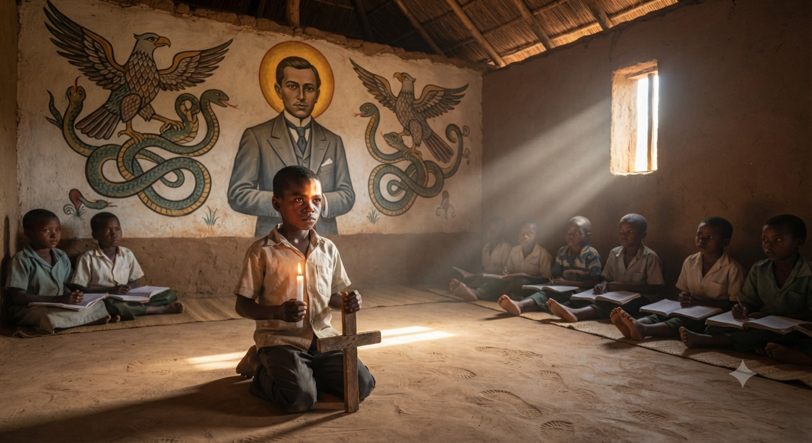
Le Souffle du Prophète
Kinkala n’est pas un simple village de la vallée du Niari. C’est une blessure qui ne cicatrise pas, un nom que l’on prononce avec une voix plus basse, comme si les syllabes elles-mêmes portaient le poids d’une promesse. Ici, la terre est rouge, d’un rouge qui ne vient pas du fer, mais du sang des ancêtres – et les collines, arrondies comme des tombes, semblent veiller sur un secret que les vivants n’osent pas tout à fait déterrer. Tanguy, jeune instituteur originaire de Brazzaville, avait été muté à Kinkala par devoir, mais il arrivait avec le scepticisme de la ville. Ses élèves lui parlaient d’André Grenard Matsoua, le leader anticolonial mort en prison en 1942, mais dont la mémoire, disaient-ils, n’avait jamais cessé de marcher sur les routes de la contrée. « Il reviendra, » chuchotaient les vieilles femmes en tirant sur leur pipe. « Quand le fleuve aura changé de lit, quand les arbres auront poussé les racines vers le ciel, il reviendra. » Tanguy haussait les épaules. Pour lui, Matsoua était un héros, certes, mais pas un dieu. Un soir de novembre, alors qu’il corrigeait des cahiers sous une lampe à pétrole, une vieille femme nommée Mambu vint frapper à sa porte. Elle tenait une croix de bois grossière, ornée d’un ruban blanc. « Viens, dit-elle. Il t’appelle. » Tanguy, intrigué, la suivit. Elle l’emmena hors du village, sur une colline où se dressait un fromager gigantesque. À son pied, une centaine de personnes étaient rassemblées, silencieuses, tous vêtus de blanc. Ils tenaient des bougies, et leurs visages étaient tournés vers l’est, là où le soleil se levait. Mambu lui tendit une bougie. « Matsoua n’est pas mort, souffla-t-elle. Il a été avalé par la terre, mais la terre n’a pas digéré son âme. Chaque année, à cette heure, elle la vomit, et elle monte vers nous sous la forme d’une brume rouge. Regarde. » Alors Tanguy vit, sur la pente opposée de la vallée, une lueur rougeâtre s’élever, comme un incendie sans flammes. Elle ondulait, prenait des formes humaines, puis se dissipait. Les fidèles tombèrent à genoux. Tanguy, les genoux tremblants, s’agenouilla à son tour. La brume ne parlait pas, mais elle communiquait – il sentit une chaleur monter dans sa poitrine, une certitude que ni les livres ni les discours n’avaient jamais pu lui donner. Matsoua n’avait pas été un simple homme politique. Il avait été un muntu – un être complet, un médiateur entre le visible et l’invisible. Sa lutte contre le colonisateur n’était pas seulement politique ; elle était cosmique, une bataille pour que l’âme africaine ne soit pas dévorée par le bruit des machines. Ce soir-là, Tanguy ne dormit pas. Il resta sur la colline, la bougie consumée, et regarda la brume monter et descendre jusqu’à l’aube. Le matsouanisme, comprit-il, n’était pas une religion au sens occidental. C’était une mémoire en mouvement, un fleuve souterrain qui irriguait les veines des vivants. Kinkala n’était pas le berceau de Matsoua, mais son tombeau vivant – un lieu où la mort elle-même avait perdu son autorité. Le lendemain, il écrivit à ses élèves une leçon différente. Il ne parla pas de dates, ni de décrets, ni de prisons. Il leur parla de la brume rouge, de la croix de bois, et de la promesse que chaque génération devait réinventer. Les enfants l’écoutèrent, graves, et lorsque le dernier sonna, ils se levèrent et firent le signe de la croix – un geste que Matsoua, disait-on, avait enseigné à ses disciples pour qu’ils ne craignent plus ni les balles ni les chaînes. Kinkala, désormais, pour Tanguy, n’était plus une simple affectation. Elle était une terre sacrée, non parce qu’elle contenait des reliques, mais parce qu’elle avait appris à pleurer sans perdre l’espoir. Et le prophète, il le savait maintenant, ne reviendrait pas sous une forme humaine – il reviendrait dans chaque acte de justice, dans chaque regard de compassion, dans chaque enfant qui apprendrait à dire non.
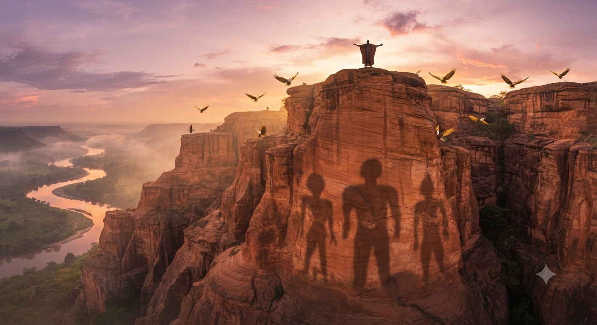
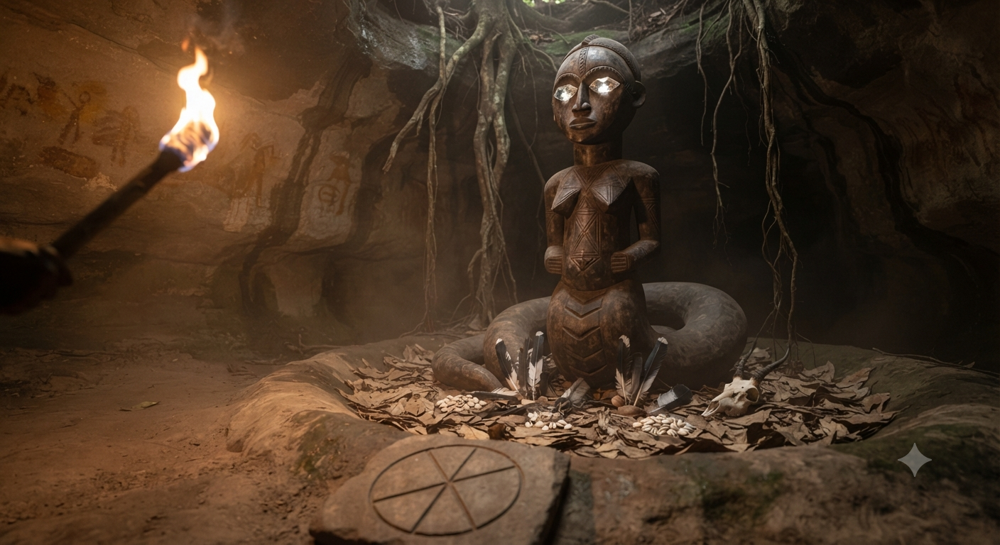
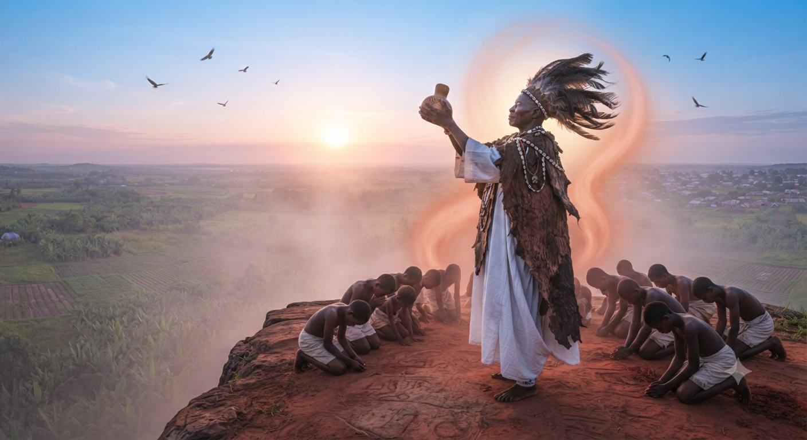
La Voix des Falaises
Le royaume Téké s'étendait sur un plateau de grès ocre, ciselé par les siècles en falaises abruptes qui tombaient sur la vallée comme des murailles de dieu. À leur pied, la rivière Nkéni coulait paresseuse, mais ses eaux portaient des murmures que seuls les initiés savaient déchiffrer. C'était une terre de pierre et de vent, où chaque fissure, chaque creux, chaque ombre projetée par les acacias était habitée par un Nkisi – un esprit gardien, une force élémentaire que les hommes ne dominaient pas, mais respectaient. Okou, jeune chasseur du clan des Ntsié, avait grandi en entendant les récits du Roi Makoko, le souverain sacré dont l'autorité spirituelle rayonnait sur tout le plateau. On racontait que Makoko ne régnait pas par la force des armes, mais par la parole des Nkisi. Chaque matin, il montait sur la falaise la plus haute, là où le grès formait une corniche naturelle, et il parlait aux esprits. Ils lui répondaient par le chant du vent, par le battement des ailes des aigles, par le roulement lointain du tonnerre. Et ces réponses, il les transmettait à son peuple, afin que la chasse soit abondante, que les pluies viennent à temps, que les conflits s'apaisent. Okou, pourtant, était un garçon impatient. Il voulait chasser, prouver sa force, se tailler un nom. Un après-midi, il escalada une falaise interdite – celle où l'on disait que le plus ancien des Nkisi, un esprit-serpent nommé Nsanga, veillait sur le trésor des ancêtres. Il grimpa, les mains écorchées par le grès rugueux, jusqu'à une grotte étroite dont l'entrée était scellée par des lianes noires. Il écarta les lianes et pénétra dans l'obscurité. Ce qu'il vit le glaça. Au centre de la grotte, une statue de bois sculpté, haute comme un homme, représentait un être mi-homme mi-serpent, les yeux incrustés de quartz. À ses pieds, des offrandes – des cauris, des plumes, des noix de kola – étaient disposées en cercle. Une voix, sans origine, résonna dans sa tête : « Pourquoi troubles-tu le repos de Nsanga ? » Okou recula, mais ses jambes se dérobèrent. Il tomba à genoux, et dans sa chute, il heurta une petite pierre sculptée qui portait le sceau du Roi Makoko – un cercle et trois traits. Il comprit alors que l'autorité du roi n'était pas une fiction politique. Makoko était l'interprète des Nkisi, et chaque pierre, chaque arbre, chaque animal était un messager. En violant la grotte, Okou avait offensé l'ordre sacré. Mais au lieu de le punir, Nsanga lui montra une vision : les falaises s'animèrent, les esprits des vents, des eaux et des forêts défilèrent devant lui, leurs formes mouvantes, leurs voix superposées. Ils n'étaient pas des dieux, mais des relations – des liens invisibles qui maintenaient le monde en équilibre. Le Roi Makoko n'était que le nœud central, celui qui nouait et dénouait ces relations pour le bien de tous. Okou sortit de la grotte au crépuscule, le visage baigné de larmes. Il ne parla à personne de sa vision. Mais le lendemain, il se rendit au palais de Makoko, s'agenouilla, et demanda à devenir l'un de ses messagers. Le roi, un vieillard aux yeux de braise, le regarda longuement, puis lui tendit une calebasse d'eau de pluie. « Bois, dit-il. Et souviens-toi : les falaises sont des livres. Les Nkisi sont les mots. Et moi, je ne suis que le lecteur. » Okou but. L'eau était fraîche, et pourtant elle brûlait. Il devint le plus fidèle des serviteurs de Makoko, celui qui parcourait les falaises, recueillant les signes, apaisant les esprits offensés, et rappelant à son peuple que la nature n'était pas une ressource, mais une assemblée de voix qu'il fallait écouter. Des années plus tard, quand le Roi Makoko mourut, Okou fut le seul à entendre son dernier souffle – un souffle qui monta vers les falaises et se fondit dans le vent. Les Nkisi pleurèrent en silence, et le grès lui-même, dit-on, se teinta d'une couleur plus sombre. Mais l'autorité spirituelle ne disparut pas. Elle se diffusa dans chaque pierre, chaque racine, chaque enfant qui apprit à respecter le silence des grottes. Le royaume Téké, désormais, n'avait plus besoin d'un roi – il avait des falaises.
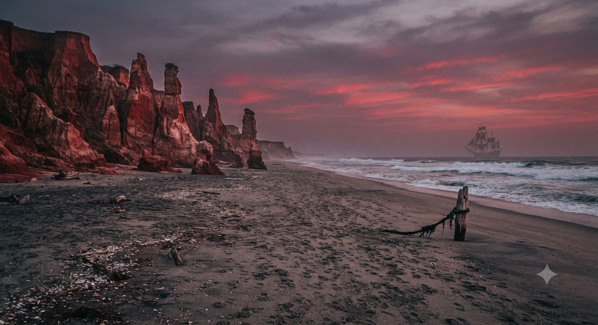
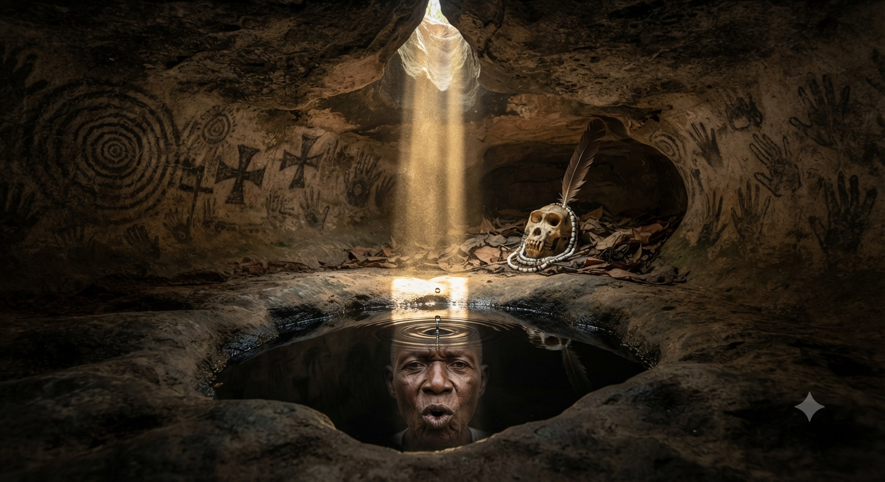
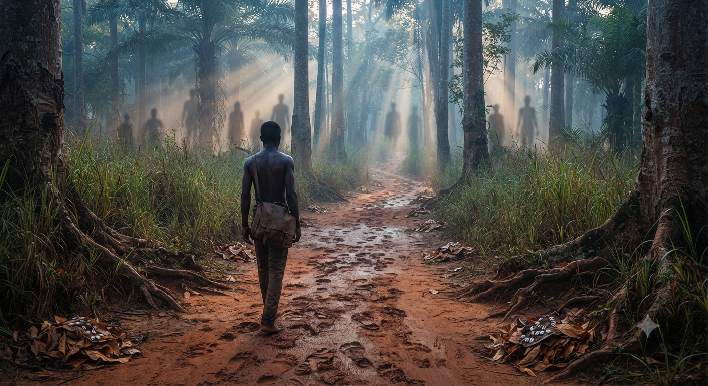
Les Chaînes de l’Oubli
À Loango, le vent ne souffle pas ; il gémit. Il s’engouffre dans les gorges de Diosso, ces falaises de grès rouge qui tombent à pic dans l’océan, et il en ressort chargé d’une plainte si ancienne qu’elle semble antérieure au langage. C’est ici que le Royaume de Loango, jadis puissant et riche, vit ses fils et ses filles arrachés à la terre, enchaînés, entassés dans des navires dont les voiles noires disparaissaient à l’horizon. Le port d’embarquement n’est plus qu’une plage de sable gris, mais la mémoire, elle, n’a pas quitté les lieux. Elle est restée là, coincée entre les rochers, imprégnée dans le sel, invisible mais tangible. Kouami, historien originaire de la diaspora, était venu à Loango pour écrire un livre. Il avait passé des mois à compulser des archives à l’étranger, mais il savait que les vrais documents n’étaient pas dans les bibliothèques. Ils étaient dans le sol, dans les fissures, dans le regard des vieux pêcheurs qui se taisaient quand on leur demandait le chemin. Lorsqu’il arriva sur la Pointe Indienne, une langue de terre battue par les vagues, il chercha le « Trou des Sorciers » – une cavité naturelle où, disait-on, les prêtres du royaume enfermaient leurs ennemis et où les esprits des sorciers exilés venaient hurler leurs malédictions. Il y descendit, à quatre pattes, une lampe torche à la main. La grotte était humide, tapissée d’algues et de sel. Au fond, une flaque d’eau noire reflétait son visage. Il s’assit, attendit. Rien ne se produisit. Déçu, il ressortit. Mais le lendemain, il suivit la piste des esclaves – un sentier étroit qui reliait le port aux gorges, serpentant entre les fromagers et les palmiers. Un guide local, une vieille femme nommée Nzali, l’accompagnait. Elle ne parlait pas. Elle marchait, et de temps en temps, elle s’arrêtait, fermait les yeux, écoutait. Kouami, agacé, lui demanda ce qu’elle entendait. Nzali ouvrit les yeux et dit : « Les ancêtres ne parlent pas, ils marchent avec toi. Écoute leurs pas. » Alors Kouami se tut. Il se concentra. Et soudain, il entendit. Ce n’étaient pas des bruits physiques, mais une vibration : le cliquetis des chaînes, le frottement des pieds nus sur la terre rouge, une respiration collective, haletante, désespérée. Il s’arrêta net. Son cœur battait la chamade. Il se retourna – personne. Mais la sensation ne le quitta pas. Il comprit que la piste n’était pas un chemin historique, c’était un corridor spectral. Chaque pas qu’il faisait, il le faisait sur les traces de milliers d’hommes et de femmes qui avaient parcouru ce même sentier, les mains liées, le regard perdu, et dont les âmes, faute d’avoir pu rejoindre leurs terres natales, étaient restées là, errantes, attachées à la poussière. Au coucher du soleil, il rejoignit la plage du port. Les vagues se brisaient sur les rochers de la Pointe Indienne, et dans leurs crêtes, il crut voir des visages – des visages noirs, graves, qui le regardaient sans colère, mais avec une attente infinie. Il ne prit pas de notes. Il ne sortit pas son carnet. Il s’agenouilla, traça un cercle dans le sable avec son doigt, et murmura : « Je vous ai entendus. Je vous porterai. » Le livre qu’il écrivit ensuite ne contenait ni dates ni noms. Il ne contenait que des sensations, des couleurs, des silences. Les éditeurs le refusèrent – « trop poétique, pas assez scientifique ». Mais Kouami s’en moquait. Car il savait, désormais, que Loango n’était pas un lieu où l’on archive l’histoire. C’était un lieu où l’histoire écoute. Le Trou des Sorciers n’abritait pas des malédictions – il abritait les pleurs que les sorciers eux-mêmes n’avaient pas pu verser. Et la piste des esclaves, hantée par les ancêtres, n’était pas un musée ; c’était un chemin de réconciliation, une invitation à marcher avec ceux qui ne sont plus, jusqu’à ce que leurs pas résonnent enfin dans le cœur des vivants.
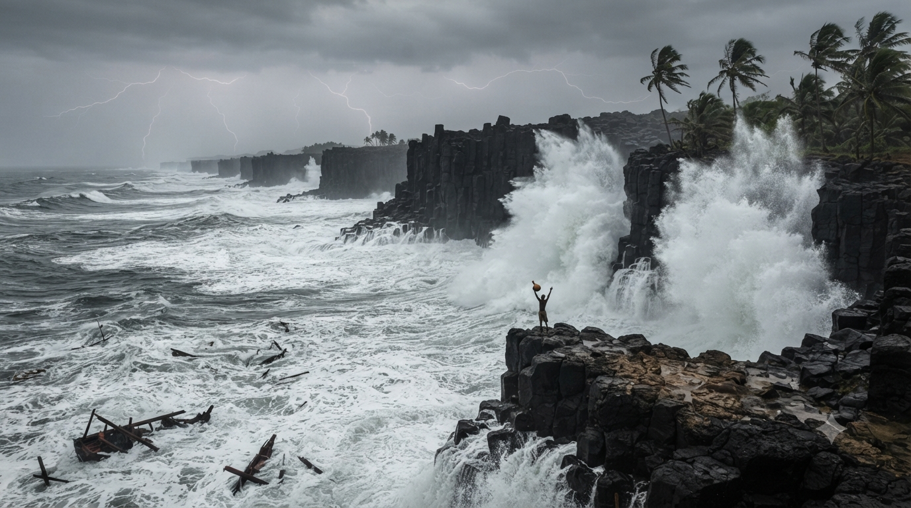
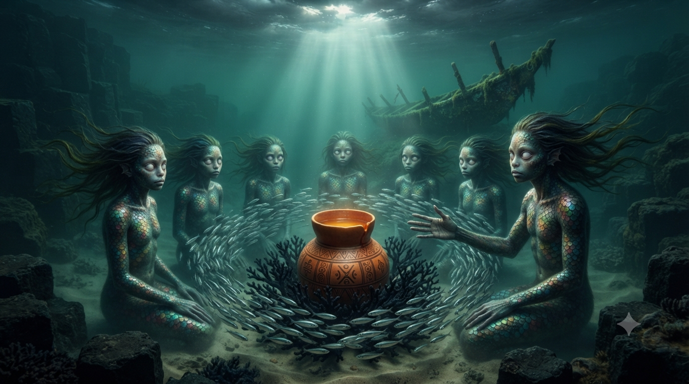
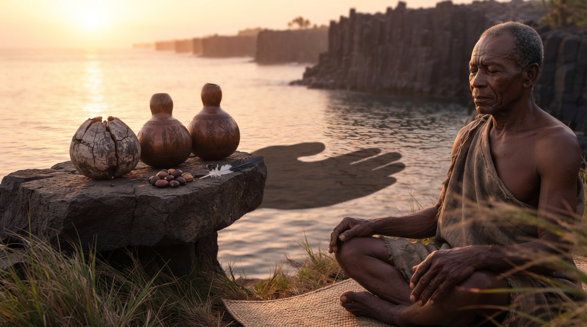
Le Pacte des Écumes
La Côte Sauvage n’a pas de plage accueillante. Elle est une muraille de rochers noirs, mordue par des vagues qui arrivent de l’horizon comme des chevaux déchaînés, leurs crinières d’écume blanche se brisant contre le basalte avec un bruit de tonnerre. Les pêcheurs de la côte, les Nsenga, la connaissent par cœur : ils savent que la mer, ici, n’est pas un simple océan. Elle est une bouche, une gueule immense qui respire au rythme des marées et dont le souffle, lorsqu’il se retire, aspire les vivants vers les profondeurs. Matsoua, jeune homme du village de Mbinda, avait hérité d’une pirogue de son père. Il était fier, impatient, et il refusait de croire aux histoires que racontaient les vieux : l’histoire des génies marins, ces êtres aux cheveux d’algue et aux yeux de perle, qui réclament des offrandes avant d’autoriser la pêche. « Des mensonges pour effrayer les enfants, » disait-il à sa mère. Elle le regarda avec tristesse et lui tendit une calebasse de vin de palme. « Dépose-la sur le rocher du Nord, avant de lancer tes filets. » Matsoua prit la calebasse, mais au lieu de l’offrir, il la but. Le lendemain, il partit seul, par mer houleuse. Les vagues s’élevaient à six mètres, mais sa pirogue était solide, et lui, confiant. Il s’éloigna de la côte, là où les eaux prenaient une couleur d’encre et où les brisants se faisaient plus rares mais plus traîtres. Soudain, une lame gigantesque, plus haute que les autres, jaillit devant lui. Elle ne venait pas du large – elle montait du fond, comme si quelque chose l’avait poussée. Matsoua tenta de virer, mais la vague l’engloutit. Il tomba. L’eau était glacée, opaque. Il se débattit, mais une force le tirait vers le bas. Dans l’obscurité, il vit des formes — des silhouettes humaines, mais aux corps luisants, aux doigts palmés, aux yeux fixes. Elles l’entouraient, le regardaient sans expression. L’une d’elles, plus grande, s’approcha et posa une main froide sur son front. Il n’entendit pas de mots, mais il compris : « Tu as bu notre vin. Tu as pris sans donner. La mer ne se prend pas. Elle se partage. » Puis, tout aussi brusquement, il remonta. Il cracha de l’eau, haleta, et se retrouva sur sa pirogue, retournée, mais intacte. Ses doigts serraient encore les restes de la calebasse brisée. Il rentra au village, grelottant, silencieux. Sa mère l’attendait sur la berge. Elle ne posa pas de questions. Elle prit une nouvelle calebasse, la remplit de vin, et dit : « Maintenant, tu sais. » Matsoua prit la calebasse. Il retourna au rocher du Nord, s’agenouilla, et la déposa soigneusement entre deux pierres. Il ne se releva pas avant que la marée ne vienne l’emporter. Depuis ce jour, Matsoua devint le gardien des offrandes. Chaque semaine, il remplissait une nouvelle calebasse de vin de palme, y ajoutait des noix de kola et un morceau de poisson séché, et la posait sur le rocher. Les génies marins, disait-il, ne demandaient pas de sang, ni de chair humaine — ils demandaient du respect. Un signe que l’humain reconnaissait leur pouvoir et ne le défiait pas. La pêche devint abondante, les vagues, bien que toujours violentes, n’engloutirent plus jamais de pirogue. La Côte Sauvage resta sauvage, mais elle cessa d’être mortelle pour ceux qui savaient honorer son pacte. Et quand Matsoua devint vieux, il raconta aux enfants que la mer, en réalité, n’était pas en colère — elle était faim. Une faim d’attention, de reconnaissance, d’humilité. Et ceux qui la nourrissaient de petites offrandes étaient nourris en retour. Les génies marins, disait-il, n’étaient pas des monstres ; ils étaient les gardiens d’un équilibre ancien que seuls les fous oublient.
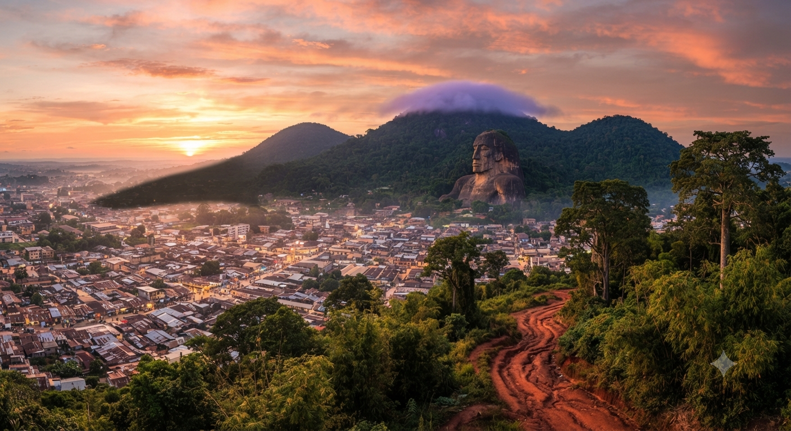
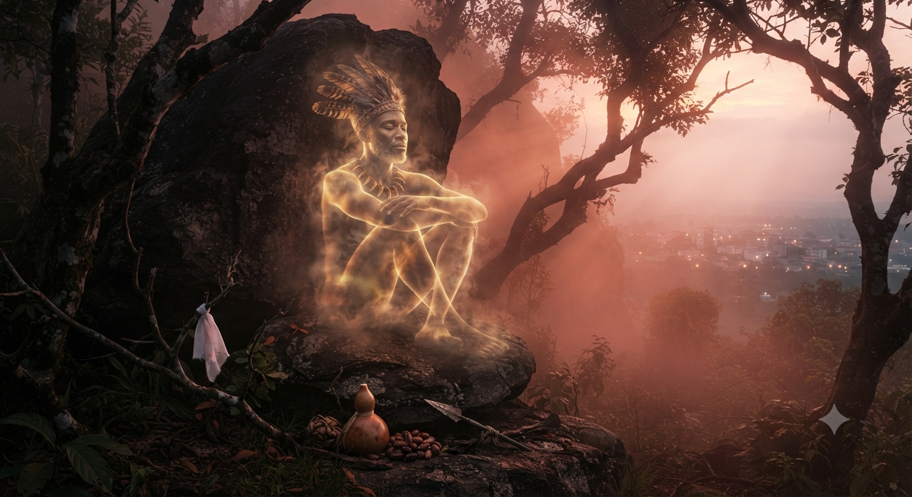
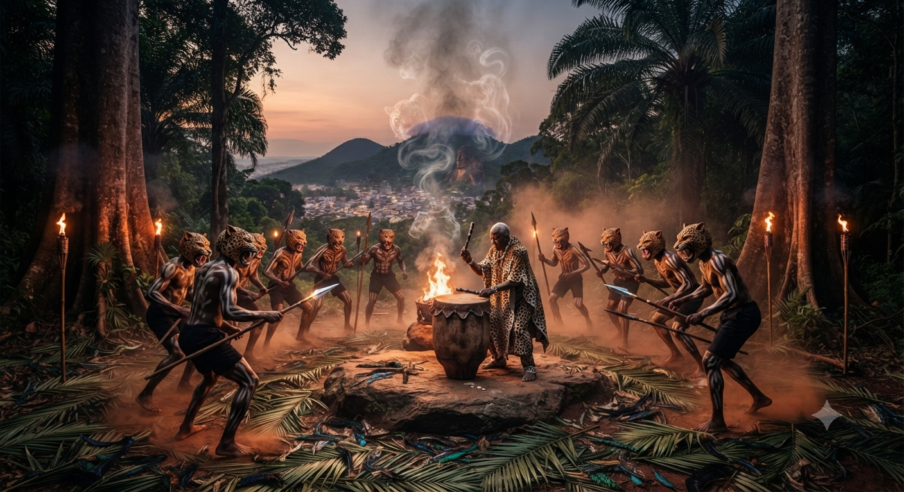
Le Mont N’Zabi, Gardien des Trois Collines
La troisième ville du pays, Dolisie, s’étend au creux d’une cuvette que dominent trois collines couvertes d’une forêt dense et sombre. La plus haute, le Mont N’Zabi, est celle que les anciens appellent le Veilleur. Nzabi et Punu, les deux peuples qui se partagent ce territoire, ne s’installèrent jamais au sommet. Ils le laissèrent intact, car ils savaient que le Mont N’Zabi n’était pas une montagne ordinaire – il était un guerrier pétrifié, un géant que les dieux avaient transformé en pierre pour qu’il protège éternellement la cité de ses ennemis. La légende raconte que jadis, alors que les armées d’un roi voisin menaçaient d’envahir la vallée, le plus grand des guerriers Nzabi, nommé Moukoundou, se tint seul sur la colline, face à l’armée. Il ne portait pas de lance, mais un tambour ngoma et un masque de bois sculpté à l’effigie d’un léopard. Toute la nuit, il frappa le tambour et dansa, appelant les esprits de la forêt. Au matin, l’armée ennemie se retira – non parce qu’elle avait peur, mais parce que la forêt elle-même s’était déplacée, créant un mur d’arbres infranchissable. Moukoundou ne redescendit jamais. On dit qu’il monta au sommet, s’assit sur un rocher, et que son corps se fondit dans la pierre. Depuis, le Mont N’Zabi est le gardien éternel de la ville. Aujourd’hui, les rituels perdurent. Chaque année, à la saison des pluies, une procession de guerriers et de prêtres Nzabi et Punu gravit les pentes du Mont. Ils portent des masques de léopard et de serpent, des lances ornées de plumes rouges, et ils dansent au rythme des tambours. Leurs pas, dit-on, réveillent l’esprit de Moukoundou, qui parcourt la forêt et veille sur la ville endormie. Les jeunes initiés doivent prouver leur bravoure en traversant les sentiers les plus escarpés, sans jamais regarder en arrière, car le Mont N’Zabi ne tolère pas la lâcheté. Kaya, un jeune Punu, avait été choisi pour le grand rituel. Il gravit le Mont avec les anciens, le cœur battant. À mi-pente, il entendit un bruit de pas derrière lui – mais personne ne suivait. Ses yeux se tournèrent vers le sommet, où une brume rougeâtre flottait entre les arbres. Il crut voir une silhouette immense, assise, les bras croisés, qui le regardait. Il s’agenouilla. Les anciens, autour de lui, entonnèrent un chant sacré. Kaya comprit alors que le Mont n’était pas une forteresse inerte : il vivait, respirait, et son souffle était celui des ancêtres qui protégeaient la ville. Les rituels militaires ne consistent pas seulement à danser : ils consistent à écouter. Car le Mont, disait-on, communique par le vent, par le bruissement des feuilles, par le cri des oiseaux. Ceux qui savent déchiffrer ces signes peuvent anticiper les menaces – une attaque, une invasion, une famine. Et la ville, confiante, dort paisiblement, car elle sait que le Gardien ne dort jamais.
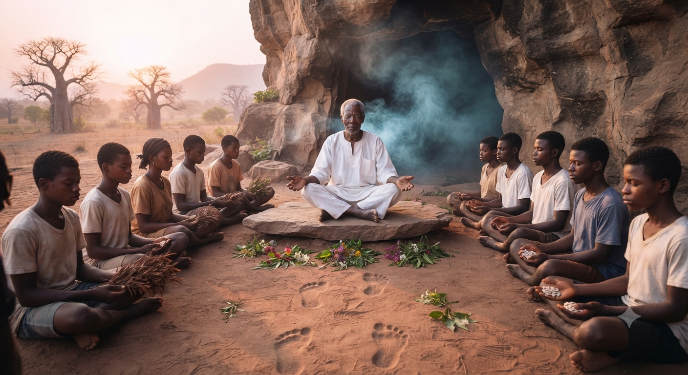
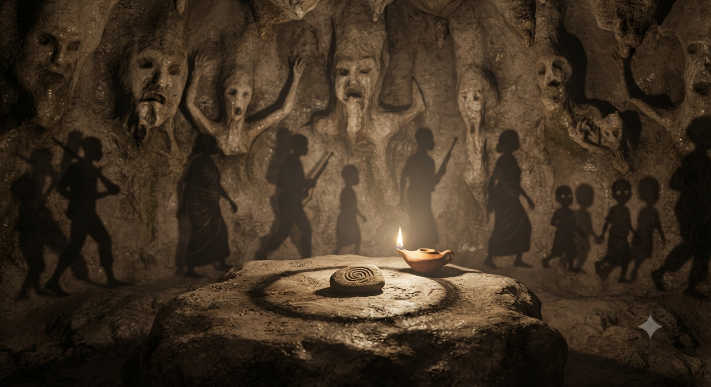
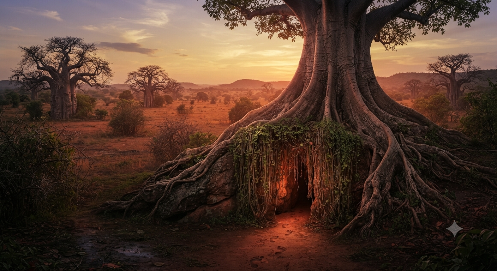
Les Voix de la Pierre
Le plateau de Mandingué, à l’ouest du pays, est une terre de latérite rouge et de savane clairsemée. Mais sous cette surface apparemment banale, la terre s’ouvre en un réseau de grottes profondes, sculptées par des millénaires d’eau et de vent. Les entrées sont discrètes – des fissures à peine visibles, cachées par des buissons épineux et des racines de baobab. Pourtant, ceux qui connaissent le secret savent que ces grottes ne sont pas de simples cavités. Ce sont des ventres – des utérus de pierre où la terre elle-même respire, et où les esprits des ancêtres murmurent à ceux qui savent écouter. Kombé, un jeune homme du village de Mandingué, avait toujours entendu les récits des grottes. Son grand-père, qui avait combattu dans les guerres de résistance contre les colonisateurs, lui racontait comment les combattants s’y réfugiaient, comment ils y cachaient leurs armes et leurs malades, comment ils y communiquaient avec les Nkisi – les esprits de la terre – pour obtenir des conseils et des protections. « Les grottes n’étaient pas des cachettes, disait le vieil homme. C’étaient des temples. Les balles ne pouvaient pas traverser la pierre, mais les esprits, eux, la traversaient. » À la mort de son grand-père, Kombé hérita d’un objet mystérieux : une petite pierre sculptée, arrondie, avec une spirale gravée dans sa surface. Le vieil homme lui avait dit : « Quand tu seras perdu, va dans la grotte de l’Éléphant. Pose cette pierre sur l’autel. Et écoute. » Kombé, curieux et un peu sceptique, décida de se rendre à la grotte. Il suivit un sentier que les anciens utilisaient, traversa une forêt d’acacias, et trouva l’entrée – une crevasse étroite, presque invisible, au pied d’un fromager centenaire. Il se glissa à l’intérieur. La grotte s’ouvrait en une salle vaste, haute de plusieurs mètres, ornée de stalactites et de stalagmites qui semblaient former des colonnes naturelles. Au centre, une pierre plate, usée par des générations de mains, servait d’autel. Des morceaux de charbon, des plumes et des cauris y étaient encore disposés, vestiges d’offrandes oubliées. Kombé posa la pierre héritée sur l’autel. Il s’assit, ferma les yeux, attendit. Rien. Il rouvrit les yeux, déçu. Puis une voix, non pas auditive, mais intérieure, monta en lui : « Pourquoi cherches-tu sans savoir ce que tu cherches ? » Il ne vit personne. Mais soudain, les ombres projetées par la lumière de l’entrée se mirent à danser sur les parois, formant des silhouettes – des hommes armés de lances, des femmes portant des enfants, des vieillards courbés sous des fardeaux. Ils défilaient lentement, comme une procession de fantômes. Kombé comprit : c’étaient les ancêtres de la résistance, ceux qui s’étaient cachés ici, qui avaient souffert ici, et dont les esprits demeuraient prisonniers de la pierre. Ils ne parlaient pas avec des mots, mais avec des images – des visions de leurs peines, de leurs combats, et aussi de leur espoir. Ils montraient un chemin de libération, une promesse que la terre elle-même avait gardée. Kombé resta dans la grotte jusqu’à la tombée de la nuit. Quand il sortit, il n’était plus le même. Il savait que les grottes n’étaient pas seulement des lieux de refuge – elles étaient des bibliothèques de l’âme, où chaque galerie, chaque fissure contenait une mémoire, une leçon, une prière. Il décida de devenir le gardien des grottes, non pas pour les protéger des intrus, mais pour écouter leurs voix et les transmettre à sa génération. Il organisa des veillées, où les jeunes du village descendaient dans les grottes pour s’asseoir en silence, les yeux fermés, et tenter d’entendre les murmures des ancêtres. Certains percevaient des bruits – des pas, des chants lointains. D’autres ressentaient une chaleur, une présence. Peu à peu, les grottes de Mandingué cessèrent d’être des mystères effrayants pour devenir des sanctuaires vivants, où la mémoire de la résistance et la sagesse des esprits se mêlaient en une seule voix de pierre.
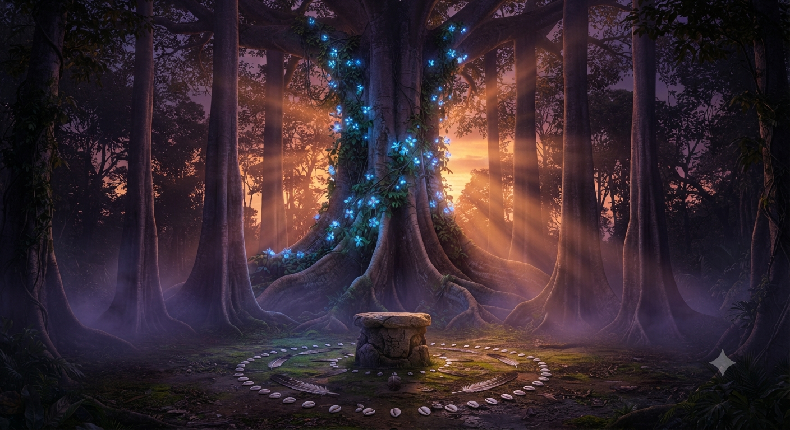
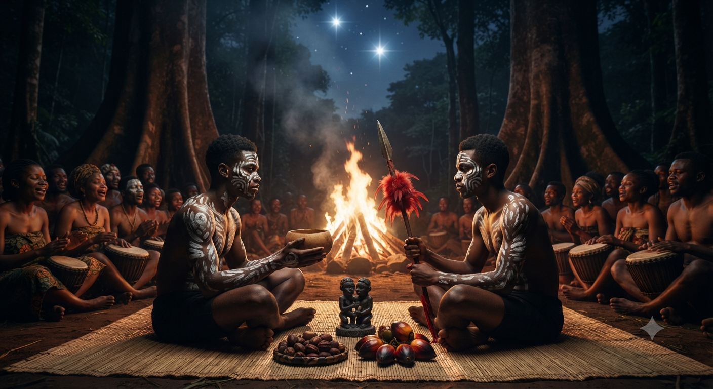
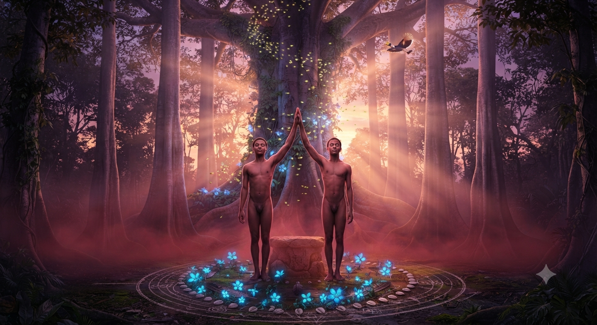
Les Jumeaux de la Forêt Sacrée
Dans la forêt de la Lékoumou, où les arbres sont si hauts qu'ils touchent les nuages et que les lianes tombent comme des serpents de coton, on raconte que les jumeaux ne naissent pas par hasard. Ils sont envoyés par les esprits de la forêt, des messagers qui viennent pour rappeler aux humains l'équilibre fragile entre le visible et l'invisible. Chaque naissance de jumeaux est une fête et un mystère : on les honore comme des divinités, on leur offre les premiers fruits, on leur chante des louanges, mais on craint aussi leur pouvoir, car on sait qu'ils peuvent voir au-delà du voile. Mwene, une jeune femme du village de Mambili, avait donné naissance à deux garçons, qu'elle appela Nzambi et Nkosi. Dès leur plus jeune âge, les deux frères étaient inséparables, mais opposés. Nzambi, l'aîné, était calme, réfléchi, fasciné par les récits des anciens. Nkosi, le cadet, était fougueux, curieux, toujours prêt à défier les interdits. Leur mère, craignant qu'ils ne s'éloignent trop l'un de l'autre, les emmena un jour au cœur de la forêt sacrée, là où un fromager géant, vieux de mille ans, formait une cathédrale de racines et de feuilles. Elle les fit asseoir au pied de l'arbre et dit : « Vous êtes nés ensemble, vous devez rester ensemble. La forêt vous regarde. Les esprits vous écoutent. Ne brisez pas le pacte. » Nzambi comprit tout de suite. Il ferma les yeux, posa la main sur l'écorce, et sentit une vibration monter du sol. Il entendit des voix – des murmures, des chants, des pleurs. Les esprits des jumeaux anciens, ceux qui avaient vécu avant lui, lui racontaient l'histoire de la forêt, les cycles de la vie, la sagesse des ancêtres. Nkosi, lui, se leva et grimpa sur une branche, désobéissant à sa mère, et partit explorer plus loin. Il découvrit une clairière où des fleurs bleues, inconnues, poussaient en cercle. Il cueillit une fleur, la mit dans sa bouche, et aussitôt, une fièvre le saisit – des visions de chasse, de guerre, de fuite. Il comprit que la forêt contenait des secrets dangereux, mais aussi des forces que l'on ne devait pas provoquer sans préparation. Les années passèrent. Nzambi devint le prêtre du culte des jumeaux, celui qui officiait les rituels de protection et de guérison. Il portait un collier de cauris et une plume d'aigle, et il savait apaiser les esprits lorsqu'ils se fâchaient. Nkosi, lui, devenu chasseur, s'aventurait toujours plus loin, cherchant à percer les mystères de la forêt, à entrer en contact avec les forces les plus sauvages. Un jour, il revint au village avec une blessure profonde – un léopard l'avait attaqué, mais il avait survécu, ramenant une griffe de l'animal comme preuve de sa bravoure. Les anciens le regardèrent avec inquiétude. « Tu as transgressé, » dirent-ils. « La griffe du léopard est un objet de pouvoir. Tu dois la rendre à la forêt. » Nkosi refusa. Il voulait la garder, la porter, devenir plus fort que les esprits. Nzambi vint le voir, la nuit, et lui parla avec douceur : « Notre pouvoir ne vient pas de ce que nous prenons, mais de ce que nous rendons. La forêt nous a confié une mission : être les gardiens, pas les conquérants. Si tu gardes cette griffe, les esprits se retourneront contre nous. » Nkosi, têtu, ne l'écouta pas. Il s'enfuit dans la forêt, emportant la griffe, et disparut pendant trois jours. Au troisième jour, les villageois entendirent un bruit sourd, venu de la forêt sacrée. Ils y coururent. Ils trouvèrent Nkosi, évanoui, au pied du fromager géant, la griffe posée sur une pierre. Autour de lui, un cercle de fleurs bleues avait poussé, et des lucioles formaient une spirale dans l'air. Nzambi s'approcha, s'agenouilla, et prit la griffe. Il la plaça délicatement dans un creux de l'arbre, et murmura une prière. Alors Nkosi ouvrit les yeux. Il regarda son frère, et pour la première fois, il pleura. « J'ai vu les esprits, » dit-il. « Ils m'ont montré le chemin. Je ne voulais pas être le rebelle, je voulais être le gardien, mais à ma manière. » Les deux frères se serrèrent l'un contre l'autre. Les anciens comprirent alors que les jumeaux n'étaient pas des divinités toutes-puissantes, mais des ponts – des êtres qui reliaient le monde des humains à celui des esprits. Nzambi était le pont de la sagesse, Nkosi était le pont de l'audace. Ensemble, ils formaient un équilibre parfait. Le culte des jumeaux, dans la Lékoumou, ne célébrait pas leur pouvoir surnaturel – il célébrait leur dualité, cette force qui maintient le monde en mouvement. Aujourd'hui, dans la forêt sacrée, un autel de pierre est dédié aux jumeaux. On y dépose des cauris, des plumes et des fleurs bleues. On dit que les esprits des jumeaux anciens veillent sur les nouveaux nés, et que ceux qui naissent deux par deux sont bénis – non pas pour leur magie, mais pour leur capacité à aimer et à se compléter. Et si l'on écoute attentivement, à la tombée du jour, on entend deux voix se répondre : l'une grave et lente, l'autre aiguë et rapide. Ce sont les jumeaux, qui parlent avec les arbres, et les arbres, qui parlent avec le ciel.